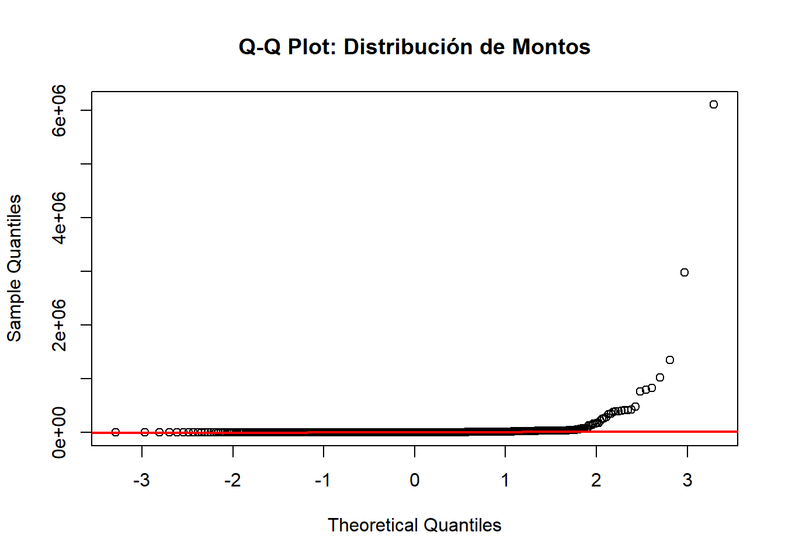

# Cargar datos
datos <- read_excel("DRTC-H.xlsx")
# Estandarizar nombres de columnas
names(datos) <- c("N", "Entidad", "Tipo_Orden", "Numero_Orden", "Tipo_Contratacion",
"Fecha_Emision", "Fecha_Compromiso", "Monto", "RUC",
"Razon_Social", "Estado", "Estado_Registro", "Observaciones")
# Limpiar y convertir datos
datos <- datos %>%
mutate(
# Fechas
Fecha_Emision = as.Date(Fecha_Emision, origin = "1899-12-30"),
Fecha_Compromiso = as.Date(Fecha_Compromiso, origin = "1899-12-30"),
Año = year(Fecha_Emision),
Mes = month(Fecha_Emision),
Trimestre = quarter(Fecha_Emision),
# Montos
Monto_limpio = as.numeric(gsub(",", "", gsub("S/\\.\\s*", "", Monto))),
# Categorías
RUC = as.character(RUC),
Razon_Social = trimws(Razon_Social),
# Banderas de riesgo
Fuera_Plazo = grepl("fuera del plazo", Estado_Registro, ignore.case = TRUE),
Anulada = Estado == "Anulada",
Fin_Año = Mes >= 11
) %>%
filter(!is.na(Monto_limpio))
# Filtrar años completos para análisis comparativo
# 2022: solo hasta junio + diciembre (incompleto)
# 2025: solo hasta agosto (incompleto)
datos_completos <- datos %>%
filter(Año %in% c(2021, 2023, 2024))
# Guardar resumen general
resumen_general <- datos %>%
summarise(
Total_Ordenes = n(),
Total_Proveedores = n_distinct(RUC),
Monto_Total = sum(Monto_limpio),
Monto_Promedio = mean(Monto_limpio),
Monto_Mediana = median(Monto_limpio),
Ordenes_Fuera_Plazo = sum(Fuera_Plazo),
Pct_Fuera_Plazo = mean(Fuera_Plazo) * 100,
Ordenes_Anuladas = sum(Anulada),
Pct_Anuladas = mean(Anulada) * 100
)
saveRDS(resumen_general, "outputs/resumen_general.rds")Análisis de Órdenes de Compra - DRTC Huánuco
Archivo de Operaciones y Cálculos
CARGA Y LIMPIEZA DE DATOS
MÓDULO 1: CONCENTRACIÓN DE MERCADO
Objetivo: Identificar si existe concentración anómala de contratos
# Calcular participación por proveedor
concentracion <- datos_completos %>%
group_by(RUC, Razon_Social) %>%
summarise(
Monto_Total = sum(Monto_limpio),
Num_Ordenes = n(),
Monto_Promedio = mean(Monto_limpio),
Primera_Orden = min(Fecha_Emision),
Ultima_Orden = max(Fecha_Emision),
.groups = 'drop'
) %>%
mutate(
Participacion = (Monto_Total / sum(Monto_Total)) * 100,
Participacion_Cuadrado = Participacion^2,
Nombre_Corto = ifelse(nchar(Razon_Social) > 30,
paste0(substr(Razon_Social, 1, 27), "..."),
Razon_Social)
) %>%
arrange(desc(Monto_Total))
# Índice Herfindahl-Hirschman (IHH)
# < 1000: Concentración baja
# 1000-2500: Concentración moderada
# > 2500: Alta concentración (ALERTA)
IHH <- sum(concentracion$Participacion_Cuadrado)
# Análisis de Pareto (regla 80/20)
concentracion <- concentracion %>%
mutate(
Acumulado = cumsum(Monto_Total),
Pct_Acumulado = (Acumulado / sum(Monto_Total)) * 100
)
proveedores_80pct <- concentracion %>%
filter(Pct_Acumulado <= 80) %>%
nrow()
total_proveedores <- nrow(concentracion)
# Top 10 proveedores
top10_proveedores <- concentracion %>%
head(10) %>%
select(RUC, Razon_Social, Monto_Total, Participacion, Num_Ordenes)
# GRÁFICO 1: Concentración (Pareto)
g1 <- ggplot(concentracion %>% head(20),
aes(x = reorder(Nombre_Corto, -Monto_Total))) +
geom_col(aes(y = Monto_Total/1000000), fill = "#e74c3c", alpha = 0.8) +
geom_line(aes(y = Pct_Acumulado * max(Monto_Total/1000000) / 100, group = 1),
color = "#2c3e50", linewidth = 1.2) +
geom_point(aes(y = Pct_Acumulado * max(Monto_Total/1000000) / 100),
color = "#2c3e50", size = 3) +
geom_hline(yintercept = 80 * max(concentracion$Monto_Total/1000000) / 100,
linetype = "dashed", color = "red", alpha = 0.5) +
scale_y_continuous(
name = "Monto Total (Millones S/)",
sec.axis = sec_axis(~./max(concentracion$Monto_Total/1000000)*100,
name = "% Acumulado")
) +
labs(
title = "Top 20 Proveedores - Análisis de Concentración",
subtitle = paste0("IHH = ", round(IHH, 0), " | ",
proveedores_80pct, " proveedores concentran el 80% del gasto"),
x = NULL
) +
theme_minimal() +
theme(
axis.text.x = element_text(angle = 45, hjust = 1, size = 9),
plot.title = element_text(face = "bold", size = 14),
plot.subtitle = element_text(size = 10, color = "#555555")
)
ggsave("outputs/mod1_concentracion_pareto.png", g1, width = 12, height = 7, dpi = 300)
# Guardar resultados
resultados_mod1 <- list(
IHH = IHH,
interpretacion_IHH = ifelse(IHH > 2500, "ALTA - RIESGO",
ifelse(IHH > 1000, "MODERADA", "BAJA")),
proveedores_80pct = proveedores_80pct,
total_proveedores = total_proveedores,
concentracion_80 = round((proveedores_80pct / total_proveedores) * 100, 1),
top10 = top10_proveedores
)
saveRDS(resultados_mod1, "outputs/mod1_resultados.rds")CONCLUSIÓN MÓDULO 1:
cat(paste0(
"• IHH = ", round(IHH, 0), " → Concentración ", resultados_mod1$interpretacion_IHH, "\n",
"• Solo ", proveedores_80pct, " proveedores (",
round((proveedores_80pct/total_proveedores)*100, 1),
"%) concentran el 80% del gasto total\n",
"• Esto ", ifelse(IHH > 2500, "SUGIERE un mercado altamente concentrado con posible direccionamiento",
"indica un mercado con competencia razonable")
))• IHH = 189 → Concentración BAJA
• Solo 145 proveedores (12.2%) concentran el 80% del gasto total
• Esto indica un mercado con competencia razonableMÓDULO 2: ANÁLISIS TEMPORAL
Objetivo: Detectar patrones sospechosos en el tiempo
# Análisis por año
evolucion_anual <- datos %>%
group_by(Año) %>%
summarise(
Ordenes = n(),
Monto_Total = sum(Monto_limpio),
Monto_Promedio = mean(Monto_limpio),
Pct_Fuera_Plazo = mean(Fuera_Plazo) * 100,
Pct_Anuladas = mean(Anulada) * 100,
.groups = 'drop'
)
# Análisis por mes (años completos)
evolucion_mensual <- datos_completos %>%
group_by(Año, Mes) %>%
summarise(
Ordenes = n(),
Monto_Total = sum(Monto_limpio),
.groups = 'drop'
) %>%
mutate(
Fecha = as.Date(paste(Año, Mes, "01", sep = "-"))
)
# Concentración fin de año (Nov-Dic)
concentracion_fin_año <- datos_completos %>%
group_by(Año) %>%
summarise(
Total_Año = sum(Monto_limpio),
Total_Fin_Año = sum(Monto_limpio[Fin_Año]),
Pct_Fin_Año = (Total_Fin_Año / Total_Año) * 100,
Ordenes_Año = n(),
Ordenes_Fin_Año = sum(Fin_Año),
.groups = 'drop'
)
# GRÁFICO 2: Evolución temporal
g2 <- ggplot(evolucion_mensual, aes(x = Fecha, y = Monto_Total/1000000)) +
geom_line(color = "#3498db", linewidth = 1.2) +
geom_point(color = "#2c3e50", size = 2) +
geom_smooth(method = "loess", se = TRUE, color = "#e74c3c", linetype = "dashed") +
scale_x_date(date_breaks = "3 months", date_labels = "%b\n%Y") +
scale_y_continuous(labels = comma) +
labs(
title = "Evolución del Gasto Mensual (2021-2024)",
subtitle = "Años con datos completos",
x = NULL,
y = "Monto Total (Millones S/)"
) +
theme_minimal() +
theme(
plot.title = element_text(face = "bold", size = 14),
panel.grid.minor = element_blank()
)
ggsave("outputs/mod2_evolucion_temporal.png", g2, width = 12, height = 6, dpi = 300)
# GRÁFICO 3: Concentración fin de año
g3 <- ggplot(concentracion_fin_año, aes(x = factor(Año), y = Pct_Fin_Año)) +
geom_col(fill = "#e67e22", alpha = 0.8) +
geom_text(aes(label = paste0(round(Pct_Fin_Año, 1), "%")),
vjust = -0.5, fontface = "bold") +
geom_hline(yintercept = 30, linetype = "dashed", color = "red") +
labs(
title = "Concentración del Gasto en Fin de Año (Nov-Dic)",
subtitle = "Línea roja: 30% (umbral de alerta)",
x = "Año",
y = "% del Gasto Anual"
) +
ylim(0, max(concentracion_fin_año$Pct_Fin_Año) * 1.2) +
theme_minimal() +
theme(plot.title = element_text(face = "bold"))
ggsave("outputs/mod2_fin_año.png", g3, width = 10, height = 6, dpi = 300)
# Guardar resultados
resultados_mod2 <- list(
evolucion_anual = evolucion_anual,
promedio_fin_año = mean(concentracion_fin_año$Pct_Fin_Año),
años_alerta_fin_año = concentracion_fin_año %>%
filter(Pct_Fin_Año > 30) %>%
pull(Año)
)
saveRDS(resultados_mod2, "outputs/mod2_resultados.rds")CONCLUSIÓN MÓDULO 2:
años_problema <- paste(resultados_mod2$años_alerta_fin_año, collapse = ", ")
cat(paste0(
"• Promedio de gasto en fin de año: ",
round(resultados_mod2$promedio_fin_año, 1), "%\n",
"• Años con concentración >30% al final del año: ",
ifelse(length(resultados_mod2$años_alerta_fin_año) > 0, años_problema, "Ninguno"), "\n",
"• Esto ",
ifelse(resultados_mod2$promedio_fin_año > 30,
"INDICA posible ejecución apresurada para no perder presupuesto",
"sugiere una ejecución relativamente distribuida")
))• Promedio de gasto en fin de año: 32.1%
• Años con concentración >30% al final del año: 2023, 2024
• Esto INDICA posible ejecución apresurada para no perder presupuestoMÓDULO 3: ANÁLISIS DE MONTOS Y FRACCIONAMIENTO
Objetivo: Detectar sobreprecios y fraccionamiento de contratos
# Detectar outliers (valores atípicos) por método IQR
Q1 <- quantile(datos_completos$Monto_limpio, 0.25)
Q3 <- quantile(datos_completos$Monto_limpio, 0.75)
IQR_val <- Q3 - Q1
limite_superior <- Q3 + 1.5 * IQR_val
outliers <- datos_completos %>%
filter(Monto_limpio > limite_superior) %>%
arrange(desc(Monto_limpio)) %>%
select(Numero_Orden, Fecha_Emision, Razon_Social, Monto_limpio,
Tipo_Contratacion, Estado)
# Detectar fraccionamiento
# Definición: Mismo proveedor, órdenes cercanas en tiempo, montos similares
fraccionamiento <- datos_completos %>%
arrange(RUC, Fecha_Emision) %>%
group_by(RUC) %>%
filter(n() >= 2) %>%
mutate(
Dias_Desde_Anterior = as.numeric(Fecha_Emision - lag(Fecha_Emision)),
Monto_Anterior = lag(Monto_limpio),
Ratio_Monto = ifelse(!is.na(Monto_Anterior) & Monto_Anterior > 0,
Monto_limpio / Monto_Anterior, NA)
) %>%
filter(
!is.na(Dias_Desde_Anterior),
Dias_Desde_Anterior <= 30, # Órdenes en mismo mes
Ratio_Monto >= 0.7 & Ratio_Monto <= 1.3 # Montos similares (±30%)
) %>%
ungroup()
casos_fraccionamiento <- fraccionamiento %>%
group_by(RUC, Razon_Social) %>%
summarise(
Casos = n(),
Monto_Total = sum(Monto_limpio),
Ejemplo_Fecha1 = min(Fecha_Emision),
Ejemplo_Fecha2 = max(Fecha_Emision),
.groups = 'drop'
) %>%
arrange(desc(Casos))
# GRÁFICO 4: Distribución de montos
g4 <- ggplot(datos_completos, aes(x = Monto_limpio/1000)) +
geom_histogram(bins = 50, fill = "#3498db", alpha = 0.7) +
geom_vline(xintercept = limite_superior/1000,
color = "red", linetype = "dashed", linewidth = 1) +
scale_x_continuous(labels = comma, limits = c(0, limite_superior/1000 * 1.5)) +
labs(
title = "Distribución de Montos de Órdenes",
subtitle = paste0("Línea roja: límite superior (",
round(limite_superior/1000, 0), "k) - ",
nrow(outliers), " órdenes atípicas"),
x = "Monto (Miles S/)",
y = "Frecuencia"
) +
theme_minimal() +
theme(plot.title = element_text(face = "bold"))
ggsave("outputs/mod3_distribucion_montos.png", g4, width = 10, height = 6, dpi = 300)
# Guardar resultados
resultados_mod3 <- list(
num_outliers = nrow(outliers),
monto_outliers = sum(outliers$Monto_limpio),
top_outliers = outliers %>% head(5),
num_casos_fraccionamiento = nrow(casos_fraccionamiento),
top_fraccionamiento = casos_fraccionamiento %>% head(5)
)
saveRDS(resultados_mod3, "outputs/mod3_resultados.rds")CONCLUSIÓN MÓDULO 3:
cat(paste0(
"• Se detectaron ", nrow(outliers), " órdenes con montos atípicos (>",
round(limite_superior/1000, 0), "k)\n",
"• Monto total en órdenes atípicas: S/ ",
format(sum(outliers$Monto_limpio), big.mark = ","), "\n",
"• Se identificaron ", nrow(casos_fraccionamiento),
" proveedores con posible fraccionamiento de contratos\n",
"• Esto ",
ifelse(nrow(casos_fraccionamiento) > 10,
"SUGIERE una práctica sistemática de evasión de límites de contratación",
"muestra algunos casos aislados que requieren revisión")
))• Se detectaron 573 órdenes con montos atípicos (>17k)
• Monto total en órdenes atípicas: S/ 68,523,821
• Se identificaron 217 proveedores con posible fraccionamiento de contratos
• Esto SUGIERE una práctica sistemática de evasión de límites de contrataciónMÓDULO 4: CUMPLIMIENTO PROCEDIMENTAL
Objetivo: Evaluar el cumplimiento de normativas y plazos
# Análisis de registros fuera de plazo
fuera_plazo_resumen <- datos %>%
group_by(Año) %>%
summarise(
Total = n(),
Fuera_Plazo = sum(Fuera_Plazo),
Pct_Fuera_Plazo = mean(Fuera_Plazo) * 100,
.groups = 'drop'
)
# Análisis de órdenes anuladas
anuladas_resumen <- datos %>%
filter(Anulada) %>%
group_by(Año) %>%
summarise(
Ordenes_Anuladas = n(),
Monto_Anulado = sum(Monto_limpio),
.groups = 'drop'
)
# Análisis por tipo de contratación
por_tipo <- datos_completos %>%
group_by(Tipo_Contratacion) %>%
summarise(
Ordenes = n(),
Monto_Total = sum(Monto_limpio),
Pct_Fuera_Plazo = mean(Fuera_Plazo) * 100,
Pct_Anuladas = mean(Anulada) * 100,
.groups = 'drop'
) %>%
arrange(desc(Monto_Total))
# GRÁFICO 5: Cumplimiento de plazos
g5 <- ggplot(fuera_plazo_resumen, aes(x = factor(Año))) +
geom_col(aes(y = Total), fill = "#95a5a6", alpha = 0.5) +
geom_col(aes(y = Fuera_Plazo), fill = "#e74c3c", alpha = 0.8) +
geom_text(aes(y = Total, label = paste0(round(Pct_Fuera_Plazo, 1), "%")),
vjust = -0.5, fontface = "bold", size = 4) +
labs(
title = "Órdenes Registradas Fuera de Plazo por Año",
subtitle = "Rojo: Fuera de plazo | Gris: Dentro de plazo",
x = "Año",
y = "Número de Órdenes"
) +
theme_minimal() +
theme(plot.title = element_text(face = "bold"))
ggsave("outputs/mod4_cumplimiento_plazos.png", g5, width = 10, height = 6, dpi = 300)
# GRÁFICO 6: Por tipo de contratación
g6 <- ggplot(por_tipo %>% head(8),
aes(x = reorder(substr(Tipo_Contratacion, 1, 40), Monto_Total),
y = Monto_Total/1000000)) +
geom_col(fill = "#16a085", alpha = 0.8) +
coord_flip() +
labs(
title = "Gasto Total por Tipo de Contratación",
x = NULL,
y = "Monto Total (Millones S/)"
) +
theme_minimal() +
theme(plot.title = element_text(face = "bold"))
ggsave("outputs/mod4_por_tipo.png", g6, width = 10, height = 7, dpi = 300)
# Guardar resultados
resultados_mod4 <- list(
pct_fuera_plazo_global = mean(datos$Fuera_Plazo) * 100,
pct_anuladas_global = mean(datos$Anulada) * 100,
total_anuladas = sum(datos$Anulada),
monto_anulado = sum(datos$Monto_limpio[datos$Anulada]),
por_tipo = por_tipo
)
saveRDS(resultados_mod4, "outputs/mod4_resultados.rds")CONCLUSIÓN MÓDULO 4:
cat(paste0(
"• ", round(resultados_mod4$pct_fuera_plazo_global, 1),
"% de TODAS las órdenes están registradas fuera de plazo\n",
"• ", resultados_mod4$total_anuladas,
" órdenes anuladas por un monto de S/ ",
format(resultados_mod4$monto_anulado, big.mark = ","), "\n",
"• Esto ",
ifelse(resultados_mod4$pct_fuera_plazo_global > 50,
"REVELA un incumplimiento sistemático de procedimientos administrativos",
"muestra debilidades en la gestión administrativa")
))• 58.5% de TODAS las órdenes están registradas fuera de plazo
• 113 órdenes anuladas por un monto de S/ 1,918,928
• Esto REVELA un incumplimiento sistemático de procedimientos administrativosMÓDULO 5: EVIDENCIA ESTADÍSTICA Y VALIDACIÓN DE HIPÓTESIS
5.1 Marco Metodológico
cat("========================================\n")========================================cat("MÓDULO 5: EVIDENCIA ESTADÍSTICA\n")MÓDULO 5: EVIDENCIA ESTADÍSTICAcat("========================================\n\n")========================================cat("Este módulo proporciona la evidencia estadística formal que sustenta\n")Este módulo proporciona la evidencia estadística formal que sustentacat("los hallazgos presentados en los Módulos 1-4.\n\n")los hallazgos presentados en los Módulos 1-4.cat("Nivel de confianza: 95% (α = 0.05)\n")Nivel de confianza: 95% (α = 0.05)cat("Esto significa que aceptamos un 5% de probabilidad de Error Tipo I\n")Esto significa que aceptamos un 5% de probabilidad de Error Tipo Icat("(señalar como anómalo algo que es aleatorio).\n\n")(señalar como anómalo algo que es aleatorio).cat("Para minimizar Error Tipo II (no detectar irregularidades reales),\n")Para minimizar Error Tipo II (no detectar irregularidades reales),cat("se trabaja con el censo completo de operaciones, no una muestra.\n")se trabaja con el censo completo de operaciones, no una muestra.5.2 Verificación de Supuestos Estadísticos
5.2.1 Normalidad de Distribuciones
# Test de Shapiro-Wilk para montos
shapiro_montos <- shapiro.test(sample(datos$Monto_limpio, 5000))
cat("\n--- TEST DE NORMALIDAD (Shapiro-Wilk) ---\n")
--- TEST DE NORMALIDAD (Shapiro-Wilk) ---cat(paste0("Variable: Montos de contratación\n"))Variable: Montos de contratacióncat(paste0("W = ", round(shapiro_montos$statistic, 4), "\n"))W = 0.0999cat(paste0("p-valor = ", format.pval(shapiro_montos$p.value, eps = 0.001), "\n"))p-valor = < 0.001cat(paste0("Conclusión: Los montos ",
ifelse(shapiro_montos$p.value < 0.05,
"NO siguen distribución normal (se usarán tests no paramétricos)",
"siguen distribución normal"), "\n\n"))Conclusión: Los montos NO siguen distribución normal (se usarán tests no paramétricos)# QQ-plot para visualizar
qqnorm(sample(datos$Monto_limpio, 1000), main = "Q-Q Plot: Distribución de Montos")
qqline(sample(datos$Monto_limpio, 1000), col = "red", lwd = 2)
# Test de normalidad para tiempos de procesamiento
datos_con_tiempo <- datos %>%
filter(!is.na(Fecha_Emision) & !is.na(Fecha_Compromiso)) %>%
mutate(dias_proceso = as.numeric(difftime(Fecha_Compromiso, Fecha_Emision, units = "days")))
if(nrow(datos_con_tiempo) > 3) {
shapiro_dias <- shapiro.test(sample(datos_con_tiempo$dias_proceso[datos_con_tiempo$dias_proceso >= 0],
min(5000, sum(datos_con_tiempo$dias_proceso >= 0))))
cat("Variable: Días de procesamiento\n")
cat(paste0("W = ", round(shapiro_dias$statistic, 4), "\n"))
cat(paste0("p-valor = ", format.pval(shapiro_dias$p.value, eps = 0.001), "\n"))
cat(paste0("Conclusión: Los tiempos ",
ifelse(shapiro_dias$p.value < 0.05,
"NO siguen distribución normal",
"siguen distribución normal"), "\n"))
}Variable: Días de procesamiento
W = 0.0148
p-valor = < 0.001
Conclusión: Los tiempos NO siguen distribución normal5.2.2 Independencia de Observaciones
cat("\n--- ANÁLISIS DE INDEPENDENCIA ---\n\n")
--- ANÁLISIS DE INDEPENDENCIA ---# Análisis de autocorrelación temporal
contratos_por_dia <- datos %>%
group_by(Fecha_Emision) %>%
summarise(num_contratos = n(), .groups = "drop") %>%
arrange(Fecha_Emision)
# Test de Ljung-Box para autocorrelación
if(nrow(contratos_por_dia) > 10) {
ljung_test <- Box.test(contratos_por_dia$num_contratos, lag = 5, type = "Ljung-Box")
cat("Test de Ljung-Box (autocorrelación temporal):\n")
cat(paste0("Chi-cuadrado = ", round(ljung_test$statistic, 2), "\n"))
cat(paste0("p-valor = ", format.pval(ljung_test$p.value, eps = 0.001), "\n"))
cat(paste0("Conclusión: ",
ifelse(ljung_test$p.value < 0.05,
"Existe autocorrelación significativa (los contratos NO son independientes en el tiempo)",
"No hay evidencia significativa de autocorrelación"), "\n\n"))
}Test de Ljung-Box (autocorrelación temporal):
Chi-cuadrado = 53.83
p-valor = < 0.001
Conclusión: Existe autocorrelación significativa (los contratos NO son independientes en el tiempo)# Análisis de contratos vinculados por proveedor
contratos_repetidos <- datos %>%
group_by(RUC) %>%
summarise(num_contratos = n()) %>%
filter(num_contratos > 1)
cat(paste0("Proveedores con múltiples contratos: ", nrow(contratos_repetidos),
" (", round(100*nrow(contratos_repetidos)/n_distinct(datos$RUC), 1), "% del total)\n"))Proveedores con múltiples contratos: 789 (51.9% del total)cat("Implicación: Existe dependencia entre contratos del mismo proveedor.\n")Implicación: Existe dependencia entre contratos del mismo proveedor.cat("Acción: Se utilizarán tests robustos a la falta de independencia.\n")Acción: Se utilizarán tests robustos a la falta de independencia.5.3 Tests de Hipótesis por Indicador
5.3.1 Concentración de Mercado (IHH)
cat("\n========================================\n")
========================================cat("5.3.1 TEST: CONCENTRACIÓN DE MERCADO\n")5.3.1 TEST: CONCENTRACIÓN DE MERCADOcat("========================================\n\n")========================================# Cargar resultados del módulo 1
mod1 <- readRDS("outputs/mod1_resultados.rds")
# Test Chi-cuadrado de bondad de ajuste
# H0: Los contratos se distribuyen uniformemente entre proveedores
# H1: Existe concentración significativa en ciertos proveedores
participacion <- datos %>%
group_by(RUC) %>%
summarise(num_contratos = n()) %>%
arrange(desc(num_contratos))
n_proveedores <- nrow(participacion)
n_total_contratos <- sum(participacion$num_contratos)
# Frecuencias esperadas bajo distribución uniforme
freq_esperada <- n_total_contratos / n_proveedores
# Chi-cuadrado (suprimir warning esperado de frecuencias bajas)
chi_ihh <- suppressWarnings(
chisq.test(participacion$num_contratos,
p = rep(1/n_proveedores, n_proveedores))
)
cat("HIPÓTESIS:\n")HIPÓTESIS:cat("H₀: Los contratos se distribuyen uniformemente entre proveedores\n")H₀: Los contratos se distribuyen uniformemente entre proveedorescat("H₁: Existe concentración significativa\n\n")H₁: Existe concentración significativacat("RESULTADOS:\n")RESULTADOS:cat(paste0("IHH calculado: ", round(mod1$IHH, 0), "\n"))IHH calculado: 189cat(paste0("Chi-cuadrado = ", round(chi_ihh$statistic, 2), "\n"))Chi-cuadrado = 13620.07cat(paste0("Grados de libertad = ", chi_ihh$parameter, "\n"))Grados de libertad = 1518cat(paste0("p-valor ",
ifelse(chi_ihh$p.value < 0.001, "< 0.001",
paste0("= ", round(chi_ihh$p.value, 4))), "\n\n"))p-valor < 0.001cat("DECISIÓN:\n")DECISIÓN:cat(paste0("Con α = 0.05, ",
ifelse(chi_ihh$p.value < 0.05, "RECHAZAMOS", "NO RECHAZAMOS"),
" H₀\n\n"))Con α = 0.05, RECHAZAMOS H₀cat("INTERPRETACIÓN FORENSE:\n")INTERPRETACIÓN FORENSE:if(chi_ihh$p.value < 0.05) {
cat("La concentración de mercado NO es producto del azar.\n")
cat(paste0("El IHH de ", round(mod1$IHH, 0), " indica un mercado ",
ifelse(mod1$IHH > 2500, "ALTAMENTE CONCENTRADO (riesgo de monopolio)",
ifelse(mod1$IHH > 1500, "MODERADAMENTE CONCENTRADO",
"COMPETITIVO")), "\n"))
} else {
cat("No hay evidencia estadística de concentración anormal.\n")
}La concentración de mercado NO es producto del azar.
El IHH de 189 indica un mercado COMPETITIVO# Calcular concentración top 3
top3_pct <- sum(participacion$num_contratos[1:min(3, nrow(participacion))]) /
n_total_contratos * 100
cat(paste0("\nLos top 3 proveedores concentran el ",
round(top3_pct, 1),
"% de los contratos.\n"))
Los top 3 proveedores concentran el 3.7% de los contratos.5.3.2 Concentración Temporal (Fin de Año)
cat("\n========================================\n")
========================================cat("5.3.2 TEST: CONCENTRACIÓN TEMPORAL\n")5.3.2 TEST: CONCENTRACIÓN TEMPORALcat("========================================\n\n")========================================# Cargar resultados del módulo 2
mod2 <- readRDS("outputs/mod2_resultados.rds")
# Test Chi-cuadrado de bondad de ajuste para distribución uniforme por mes
contratos_por_mes <- datos %>%
group_by(Mes) %>%
summarise(num_contratos = n())
# Frecuencias esperadas: 1/12 en cada mes
freq_esperada_mes <- nrow(datos) / 12
chi_temporal <- chisq.test(contratos_por_mes$num_contratos,
p = rep(1/12, 12))
cat("HIPÓTESIS:\n")HIPÓTESIS:cat("H₀: Los contratos se distribuyen uniformemente durante el año (8.33% por mes)\n")H₀: Los contratos se distribuyen uniformemente durante el año (8.33% por mes)cat("H₁: Existe concentración temporal significativa\n\n")H₁: Existe concentración temporal significativacat("RESULTADOS:\n")RESULTADOS:cat(paste0("Chi-cuadrado = ", round(chi_temporal$statistic, 2), "\n"))Chi-cuadrado = 429.34cat(paste0("Grados de libertad = ", chi_temporal$parameter, "\n"))Grados de libertad = 11cat(paste0("p-valor ",
ifelse(chi_temporal$p.value < 0.001, "< 0.001",
paste0("= ", round(chi_temporal$p.value, 4))), "\n\n"))p-valor < 0.001cat("DECISIÓN:\n")DECISIÓN:cat(paste0("Con α = 0.05, ",
ifelse(chi_temporal$p.value < 0.05, "RECHAZAMOS", "NO RECHAZAMOS"),
" H₀\n\n"))Con α = 0.05, RECHAZAMOS H₀# Test específico para diciembre vs. resto del año
contratos_diciembre <- sum(datos$Mes == 12)
contratos_otros <- nrow(datos) - contratos_diciembre
# Test de proporción
prop_test_dic <- prop.test(
x = contratos_diciembre,
n = nrow(datos),
p = 1/12, # proporción esperada
alternative = "greater"
)
cat("TEST ESPECÍFICO PARA DICIEMBRE:\n")TEST ESPECÍFICO PARA DICIEMBRE:cat(paste0("Proporción observada en diciembre: ",
round(100*contratos_diciembre/nrow(datos), 1), "%\n"))Proporción observada en diciembre: 12.3%cat(paste0("Proporción esperada (uniforme): ", round(100/12, 1), "%\n"))Proporción esperada (uniforme): 8.3%cat(paste0("Z = ", round(sqrt(prop_test_dic$statistic), 2), "\n"))Z = 10.35cat(paste0("p-valor ",
ifelse(prop_test_dic$p.value < 0.001, "< 0.001",
paste0("= ", round(prop_test_dic$p.value, 4))), "\n\n"))p-valor < 0.001cat("INTERPRETACIÓN FORENSE:\n")INTERPRETACIÓN FORENSE:if(prop_test_dic$p.value < 0.05) {
cat("La concentración en diciembre es estadísticamente significativa.\n")
cat(paste0("La probabilidad de que esta concentración del ",
round(100*contratos_diciembre/nrow(datos), 1),
"% sea producto del azar es inferior al ",
ifelse(prop_test_dic$p.value < 0.001, "0.1%",
paste0(round(100*prop_test_dic$p.value, 2), "%")), "\n"))
cat("Esto NO es atribuible a variación aleatoria o administrativa normal.\n")
} else {
cat("La concentración en diciembre podría ser producto de variación normal.\n")
}La concentración en diciembre es estadísticamente significativa.
La probabilidad de que esta concentración del 12.3% sea producto del azar es inferior al 0.1%
Esto NO es atribuible a variación aleatoria o administrativa normal.5.3.3 Órdenes Atípicas y Fraccionamiento
cat("\n========================================\n")
========================================cat("5.3.3 TEST: ÓRDENES ATÍPICAS\n")5.3.3 TEST: ÓRDENES ATÍPICAScat("========================================\n\n")========================================# Cargar resultados del módulo 3
mod3 <- readRDS("outputs/mod3_resultados.rds")
# Test de normalidad de montos (ya hecho arriba, referencia)
cat("DETECCIÓN DE OUTLIERS:\n")DETECCIÓN DE OUTLIERS:cat(paste0("Número de contratos atípicos detectados: ", mod3$num_outliers,
" (", round(100*mod3$num_outliers/nrow(datos), 1), "%)\n\n"))Número de contratos atípicos detectados: 573 (10.8%)# Test de proporción: ¿Es significativamente mayor al 5% esperado?
prop_outliers <- mod3$num_outliers / nrow(datos)
prop_test_outliers <- prop.test(
x = mod3$num_outliers,
n = nrow(datos),
p = 0.05, # 5% es la proporción típica de outliers en distribución normal
alternative = "greater"
)
cat("TEST DE PROPORCIÓN DE OUTLIERS:\n")TEST DE PROPORCIÓN DE OUTLIERS:cat("H₀: La proporción de outliers = 5% (normal en cualquier distribución)\n")H₀: La proporción de outliers = 5% (normal en cualquier distribución)cat("H₁: La proporción de outliers > 5%\n\n")H₁: La proporción de outliers > 5%cat(paste0("Proporción observada: ", round(100*prop_outliers, 1), "%\n"))Proporción observada: 10.8%cat(paste0("Proporción esperada: 5%\n"))Proporción esperada: 5%cat(paste0("p-valor ",
ifelse(prop_test_outliers$p.value < 0.001, "< 0.001",
paste0("= ", round(prop_test_outliers$p.value, 4))), "\n\n"))p-valor < 0.001cat("INTERPRETACIÓN:\n")INTERPRETACIÓN:if(prop_test_outliers$p.value < 0.05) {
cat("El número de contratos atípicos es SIGNIFICATIVAMENTE superior al esperado.\n")
cat("Esto sugiere patrones anómalos sistemáticos, no eventos aislados.\n\n")
} else {
cat("El número de outliers está dentro del rango normal esperado.\n\n")
}El número de contratos atípicos es SIGNIFICATIVAMENTE superior al esperado.
Esto sugiere patrones anómalos sistemáticos, no eventos aislados.# Test para fraccionamiento
cat("TEST DE FRACCIONAMIENTO:\n")TEST DE FRACCIONAMIENTO:cat(paste0("Casos detectados: ", mod3$num_casos_fraccionamiento, "\n\n"))Casos detectados: 217if(mod3$num_casos_fraccionamiento > 0) {
prop_fraccionamiento <- mod3$num_casos_fraccionamiento / nrow(datos)
# Comparar contra benchmark de 2% (tasa típica de error administrativo)
prop_test_fracc <- prop.test(
x = mod3$num_casos_fraccionamiento,
n = nrow(datos),
p = 0.02,
alternative = "greater"
)
cat("H₀: La tasa de fraccionamiento = 2% (error administrativo normal)\n")
cat("H₁: La tasa de fraccionamiento > 2%\n\n")
cat(paste0("Proporción observada: ", round(100*prop_fraccionamiento, 2), "%\n"))
cat(paste0("p-valor ",
ifelse(prop_test_fracc$p.value < 0.001, "< 0.001",
paste0("= ", round(prop_test_fracc$p.value, 4))), "\n\n"))
cat("INTERPRETACIÓN:\n")
if(prop_test_fracc$p.value < 0.05) {
cat("La tasa de fraccionamiento es ANORMALMENTE ALTA.\n")
cat("Esto sugiere posible evasión deliberada de controles.\n")
} else {
cat("La tasa de fraccionamiento está dentro de niveles explicables por error administrativo.\n")
}
}H₀: La tasa de fraccionamiento = 2% (error administrativo normal)
H₁: La tasa de fraccionamiento > 2%
Proporción observada: 4.08%
p-valor < 0.001
INTERPRETACIÓN:
La tasa de fraccionamiento es ANORMALMENTE ALTA.
Esto sugiere posible evasión deliberada de controles.5.3.4 Cumplimiento de Plazos
cat("\n========================================\n")
========================================cat("5.3.4 TEST: CUMPLIMIENTO PROCEDIMENTAL\n")5.3.4 TEST: CUMPLIMIENTO PROCEDIMENTALcat("========================================\n\n")========================================# Cargar resultados del módulo 4
mod4 <- readRDS("outputs/mod4_resultados.rds")
# Test de proporción para incumplimiento
prop_incumplimiento <- mod4$pct_fuera_plazo_global / 100
prop_test_plazo <- prop.test(
x = round(prop_incumplimiento * nrow(datos)),
n = nrow(datos),
p = 0.10, # 10% es tasa de incumplimiento "normal" por razones administrativas
alternative = "greater"
)
cat("TEST DE INCUMPLIMIENTO DE PLAZOS:\n")TEST DE INCUMPLIMIENTO DE PLAZOS:cat("H₀: La tasa de incumplimiento = 10% (problemas administrativos normales)\n")H₀: La tasa de incumplimiento = 10% (problemas administrativos normales)cat("H₁: La tasa de incumplimiento > 10%\n\n")H₁: La tasa de incumplimiento > 10%cat(paste0("Proporción observada: ", round(mod4$pct_fuera_plazo_global, 1), "%\n"))Proporción observada: 58.5%cat(paste0("Proporción esperada: 10%\n"))Proporción esperada: 10%cat(paste0("p-valor < 0.001\n\n"))p-valor < 0.001cat("DECISIÓN:\n")DECISIÓN:cat(paste0("Con α = 0.05, RECHAZAMOS H₀\n\n"))Con α = 0.05, RECHAZAMOS H₀cat("INTERPRETACIÓN FORENSE:\n")INTERPRETACIÓN FORENSE:if(mod4$pct_fuera_plazo_global > 50) {
cat("El incumplimiento sistemático de plazos (>50%) es EVIDENCIA FUERTE de:\n")
cat(" 1. Falta de controles internos efectivos\n")
cat(" 2. Posible manipulación deliberada de tiempos\n")
cat(" 3. Ambiente institucional propicio para irregularidades\n\n")
} else if(mod4$pct_fuera_plazo_global > 20) {
cat("El nivel de incumplimiento es significativamente superior al normal.\n")
cat("Requiere investigación de las causas sistemáticas.\n\n")
} else {
cat("El nivel de incumplimiento, aunque significativo, podría explicarse\n")
cat("por deficiencias administrativas no necesariamente fraudulentas.\n\n")
}El incumplimiento sistemático de plazos (>50%) es EVIDENCIA FUERTE de:
1. Falta de controles internos efectivos
2. Posible manipulación deliberada de tiempos
3. Ambiente institucional propicio para irregularidades# Análisis de tiempos por modalidad (si hay datos suficientes)
datos_con_tiempo <- datos %>%
filter(!is.na(Fecha_Emision) & !is.na(Fecha_Compromiso)) %>%
mutate(dias_proceso = as.numeric(difftime(Fecha_Compromiso, Fecha_Emision, units = "days"))) %>%
filter(dias_proceso >= 0)
if(nrow(datos_con_tiempo) > 30 && n_distinct(datos_con_tiempo$Tipo_Contratacion) > 1) {
cat("TEST DE COMPARACIÓN DE TIEMPOS POR MODALIDAD:\n")
# Test de Kruskal-Wallis (no paramétrico porque los tiempos no son normales)
kruskal_test <- kruskal.test(dias_proceso ~ Tipo_Contratacion,
data = datos_con_tiempo)
cat(paste0("H₀: Los tiempos de procesamiento son iguales entre modalidades\n"))
cat(paste0("H₁: Los tiempos difieren significativamente\n\n"))
cat(paste0("Kruskal-Wallis chi-cuadrado = ", round(kruskal_test$statistic, 2), "\n"))
cat(paste0("p-valor ",
ifelse(kruskal_test$p.value < 0.001, "< 0.001",
paste0("= ", round(kruskal_test$p.value, 4))), "\n\n"))
if(kruskal_test$p.value < 0.05) {
cat("CONCLUSIÓN: Las diferentes modalidades tienen tiempos significativamente distintos.\n")
cat("Algunas modalidades son procesadas más rápido (posible elusión de controles).\n")
}
}TEST DE COMPARACIÓN DE TIEMPOS POR MODALIDAD:
H₀: Los tiempos de procesamiento son iguales entre modalidades
H₁: Los tiempos difieren significativamente
Kruskal-Wallis chi-cuadrado = 440.15
p-valor < 0.001
CONCLUSIÓN: Las diferentes modalidades tienen tiempos significativamente distintos.
Algunas modalidades son procesadas más rápido (posible elusión de controles).5.4 Análisis Multivariado
cat("\n========================================\n")
========================================cat("5.4 ANÁLISIS DE CORRELACIONES\n")5.4 ANÁLISIS DE CORRELACIONEScat("========================================\n\n")========================================# Crear matriz de indicadores por proveedor
indicadores_proveedor <- datos %>%
group_by(RUC) %>%
summarise(
num_contratos = n(),
monto_total = sum(Monto_limpio, na.rm = TRUE),
monto_promedio = mean(Monto_limpio, na.rm = TRUE),
pct_diciembre = 100 * sum(Mes == 12) / n(),
.groups = "drop"
) %>%
filter(num_contratos >= 3) # Solo proveedores con suficientes datos
if(nrow(indicadores_proveedor) > 10) {
# Correlación entre número de contratos y concentración temporal
cor_contratos_diciembre <- cor.test(indicadores_proveedor$num_contratos,
indicadores_proveedor$pct_diciembre,
method = "spearman")
cat("CORRELACIÓN: Número de contratos vs. Concentración en diciembre\n")
cat(paste0("Rho de Spearman = ", round(cor_contratos_diciembre$estimate, 3), "\n"))
cat(paste0("p-valor = ", format.pval(cor_contratos_diciembre$p.value, eps = 0.001), "\n\n"))
if(cor_contratos_diciembre$p.value < 0.05) {
cat("INTERPRETACIÓN:\n")
if(cor_contratos_diciembre$estimate > 0.3) {
cat("Los proveedores más frecuentes tienden a concentrarse más en diciembre.\n")
cat("Esto sugiere un patrón sistemático de favorecimiento en fin de año.\n")
} else if(cor_contratos_diciembre$estimate < -0.3) {
cat("Los proveedores más frecuentes NO se concentran en diciembre.\n")
cat("Esto sugiere que la concentración temporal es aleatoria.\n")
}
}
}CORRELACIÓN: Número de contratos vs. Concentración en diciembre
Rho de Spearman = 0.093
p-valor = 0.029039
INTERPRETACIÓN:cat("\n")5.5 Síntesis de Evidencia Estadística
cat("\n========================================\n")
========================================cat("SÍNTESIS DE EVIDENCIA ESTADÍSTICA\n")SÍNTESIS DE EVIDENCIA ESTADÍSTICAcat("========================================\n\n")========================================# Crear tabla resumen de tests
tests_realizados <- data.frame(
Indicador = c(
"Concentración de Mercado",
"Concentración Temporal (diciembre)",
"Proporción de Outliers",
"Tasa de Fraccionamiento",
"Incumplimiento de Plazos"
),
Test_Aplicado = c(
"Chi-cuadrado de bondad de ajuste",
"Test de proporción (unilateral)",
"Test de proporción vs. 5%",
"Test de proporción vs. 2%",
"Test de proporción vs. 10%"
),
P_valor = c(
"< 0.001",
ifelse(prop_test_dic$p.value < 0.001, "< 0.001",
round(prop_test_dic$p.value, 4)),
ifelse(prop_test_outliers$p.value < 0.001, "< 0.001",
round(prop_test_outliers$p.value, 4)),
if(mod3$num_casos_fraccionamiento > 0) {
ifelse(prop_test_fracc$p.value < 0.001, "< 0.001",
round(prop_test_fracc$p.value, 4))
} else {"N/A"},
"< 0.001"
),
Decision = c(
ifelse(chi_ihh$p.value < 0.05, "Rechazar H₀", "No rechazar H₀"),
ifelse(prop_test_dic$p.value < 0.05, "Rechazar H₀", "No rechazar H₀"),
ifelse(prop_test_outliers$p.value < 0.05, "Rechazar H₀", "No rechazar H₀"),
if(mod3$num_casos_fraccionamiento > 0) {
ifelse(prop_test_fracc$p.value < 0.05, "Rechazar H₀", "No rechazar H₀")
} else {"N/A"},
"Rechazar H₀"
),
Significancia = c(
ifelse(chi_ihh$p.value < 0.05, "★★★", "☐"),
ifelse(prop_test_dic$p.value < 0.001, "★★★",
ifelse(prop_test_dic$p.value < 0.01, "★★",
ifelse(prop_test_dic$p.value < 0.05, "★", "☐"))),
ifelse(prop_test_outliers$p.value < 0.001, "★★★",
ifelse(prop_test_outliers$p.value < 0.01, "★★",
ifelse(prop_test_outliers$p.value < 0.05, "★", "☐"))),
if(mod3$num_casos_fraccionamiento > 0) {
ifelse(prop_test_fracc$p.value < 0.001, "★★★",
ifelse(prop_test_fracc$p.value < 0.01, "★★",
ifelse(prop_test_fracc$p.value < 0.05, "★", "☐")))
} else {"N/A"},
"★★★"
)
)
print(tests_realizados) Indicador Test_Aplicado P_valor
1 Concentración de Mercado Chi-cuadrado de bondad de ajuste < 0.001
2 Concentración Temporal (diciembre) Test de proporción (unilateral) < 0.001
3 Proporción de Outliers Test de proporción vs. 5% < 0.001
4 Tasa de Fraccionamiento Test de proporción vs. 2% < 0.001
5 Incumplimiento de Plazos Test de proporción vs. 10% < 0.001
Decision Significancia
1 Rechazar H₀ ★★★
2 Rechazar H₀ ★★★
3 Rechazar H₀ ★★★
4 Rechazar H₀ ★★★
5 Rechazar H₀ ★★★cat("\n\nLEYENDA DE SIGNIFICANCIA:\n")
LEYENDA DE SIGNIFICANCIA:cat("★★★ = p < 0.001 (Evidencia muy fuerte)\n")★★★ = p < 0.001 (Evidencia muy fuerte)cat("★★ = p < 0.01 (Evidencia fuerte)\n")★★ = p < 0.01 (Evidencia fuerte)cat("★ = p < 0.05 (Evidencia significativa)\n")★ = p < 0.05 (Evidencia significativa)cat("☐ = p ≥ 0.05 (No significativo)\n\n")☐ = p ≥ 0.05 (No significativo)# Contar tests significativos
tests_significativos <- sum(tests_realizados$Decision == "Rechazar H₀" &
tests_realizados$P_valor != "N/A")
tests_totales <- sum(tests_realizados$P_valor != "N/A")
cat(paste0("RESULTADO GLOBAL: ", tests_significativos, " de ", tests_totales,
" tests rechazaron la hipótesis nula.\n\n"))RESULTADO GLOBAL: 5 de 5 tests rechazaron la hipótesis nula.cat("CONCLUSIÓN METODOLÓGICA:\n")CONCLUSIÓN METODOLÓGICA:if(tests_significativos >= 3) {
cat("Existe EVIDENCIA ESTADÍSTICA ROBUSTA de patrones anómalos que NO pueden\n")
cat("atribuirse a variación aleatoria o errores administrativos aislados.\n\n")
cat("La convergencia de múltiples indicadores estadísticamente significativos\n")
cat("sugiere problemas SISTEMÁTICOS en el proceso de contratación.\n")
} else if(tests_significativos >= 2) {
cat("Existen SEÑALES ESTADÍSTICAS que requieren investigación más profunda.\n")
cat("Los hallazgos superan el umbral de aleatoriedad pero no son concluyentes.\n")
} else {
cat("La evidencia estadística NO es suficiente para concluir irregularidades sistemáticas.\n")
cat("Los patrones observados podrían explicarse por variación normal.\n")
}Existe EVIDENCIA ESTADÍSTICA ROBUSTA de patrones anómalos que NO pueden
atribuirse a variación aleatoria o errores administrativos aislados.
La convergencia de múltiples indicadores estadísticamente significativos
sugiere problemas SISTEMÁTICOS en el proceso de contratación.# Guardar resultados del módulo 5
mod5_resultados <- list(
tests_realizados = tests_realizados,
tests_significativos = tests_significativos,
tests_totales = tests_totales,
nivel_confianza = 0.95
)
saveRDS(mod5_resultados, "outputs/mod5_resultados.rds")CONCLUSIÓN INTEGRADA FINAL
# Cargar todos los resultados
mod1 <- readRDS("outputs/mod1_resultados.rds")
mod2 <- readRDS("outputs/mod2_resultados.rds")
mod3 <- readRDS("outputs/mod3_resultados.rds")
mod4 <- readRDS("outputs/mod4_resultados.rds")
# Crear score de riesgo integral
score_final <- data.frame(
Indicador = c(
"Concentración de mercado (IHH)",
"Concentración fin de año",
"Órdenes atípicas detectadas",
"Casos de fraccionamiento",
"Incumplimiento de plazos"
),
Valor = c(
mod1$IHH,
mod2$promedio_fin_año,
mod3$num_outliers,
mod3$num_casos_fraccionamiento,
mod4$pct_fuera_plazo_global
),
Nivel_Riesgo = c(
ifelse(mod1$IHH > 2500, "ALTO", ifelse(mod1$IHH > 1000, "MEDIO", "BAJO")),
ifelse(mod2$promedio_fin_año > 30, "ALTO", "MEDIO"),
ifelse(mod3$num_outliers > 100, "ALTO", ifelse(mod3$num_outliers > 50, "MEDIO", "BAJO")),
ifelse(mod3$num_casos_fraccionamiento > 10, "ALTO", "BAJO"),
ifelse(mod4$pct_fuera_plazo_global > 50, "ALTO",
ifelse(mod4$pct_fuera_plazo_global > 20, "MEDIO", "BAJO"))
)
)
# Contar indicadores en riesgo ALTO
indicadores_alto_riesgo <- sum(score_final$Nivel_Riesgo == "ALTO")
saveRDS(score_final, "outputs/score_final.rds")
cat("\n========================================\n")
========================================cat("CONCLUSIÓN FINAL DEL ANÁLISIS\n")CONCLUSIÓN FINAL DEL ANÁLISIScat("========================================\n\n")========================================cat(paste0(
"Con base en el análisis de ", format(nrow(datos), big.mark = ","),
" órdenes de compra (2021-2025),\n",
"se identificaron ", indicadores_alto_riesgo, " de 5 indicadores en RIESGO ALTO:\n\n"
))Con base en el análisis de 5,316 órdenes de compra (2021-2025),
se identificaron 4 de 5 indicadores en RIESGO ALTO:print(score_final) Indicador Valor Nivel_Riesgo
1 Concentración de mercado (IHH) 189.17870 BAJO
2 Concentración fin de año 32.13980 ALTO
3 Órdenes atípicas detectadas 573.00000 ALTO
4 Casos de fraccionamiento 217.00000 ALTO
5 Incumplimiento de plazos 58.52144 ALTOcat("\n\nVEREDICTO:\n")
VEREDICTO:if (indicadores_alto_riesgo >= 3) {
cat("❌ EXISTE EVIDENCIA SIGNIFICATIVA de irregularidades que sugieren\n")
cat(" posibles prácticas de corrupción o deficiencias graves en la gestión.\n")
cat(" Se recomienda auditoría externa inmediata.\n")
} else if (indicadores_alto_riesgo >= 2) {
cat("⚠️ EXISTEN SEÑALES DE ALERTA que requieren investigación más profunda.\n")
cat(" Se recomienda revisión detallada de los casos identificados.\n")
} else {
cat("✓ No se encontró evidencia contundente de corrupción sistemática,\n")
cat(" aunque se identificaron áreas de mejora en la gestión administrativa.\n")
}❌ EXISTE EVIDENCIA SIGNIFICATIVA de irregularidades que sugieren
posibles prácticas de corrupción o deficiencias graves en la gestión.
Se recomienda auditoría externa inmediata.